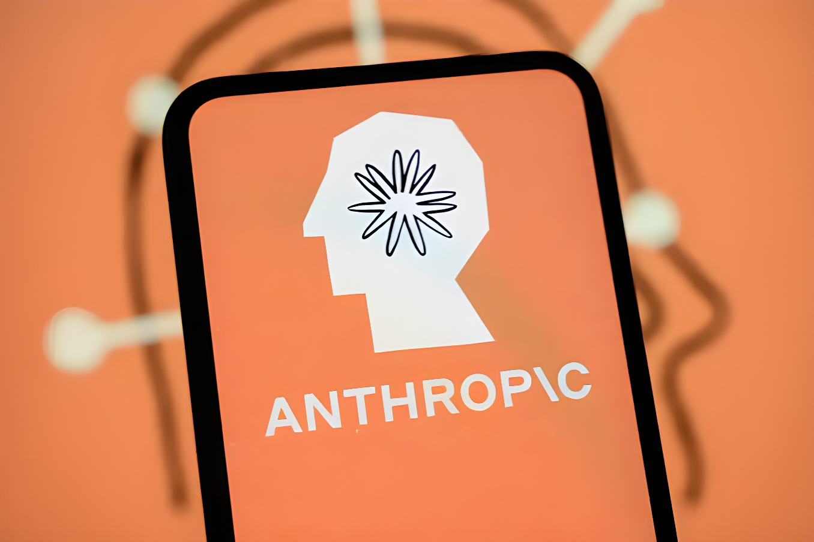

À partir du 2 août 2026, date d'entrée en application des obligations de transparence de l'Article 50 du règlement européen sur l'intelligence artificielle, Anthropic intègre un filigrane invisible dans les textes produits par ses nouveaux modèles Claude. Détectable uniquement par une clé cryptographique et sans effet sur la qualité du texte, ce marquage s'applique non seulement en Europe mais partout où Claude est proposé dans le monde — une décision qu'Anthropic justifie par l'absence de moyen fiable de limiter la mesure à une seule région.
Un grand modèle de langage comme Claude construit son texte mot après mot, en choisissant à chaque étape parmi plusieurs candidats tout aussi plausibles les uns que les autres. Dans une phrase comme « le temps était froid et… », rien ne distingue vraiment « couvert » de « gris » : le choix final relève alors d'un tirage aléatoire. C'est précisément sur ces choix à faible enjeu, répétés des centaines de fois dans un même texte, qu'Anthropic a construit son filigrane : au lieu d'un tirage purement aléatoire, le modèle utilise une clé secrète combinée aux mots précédents pour orienter la sélection, laissant une empreinte statistique invisible à l'œil nu mais repérable par quiconque détient cette clé.
Cette méthode, une adaptation de la technique SynthID-Text mise au point par Google DeepMind et publiée dans la revue Nature en 2024, n'ajoute aucun caractère caché ni jeton supplémentaire au texte. Anthropic affirme n'avoir observé, lors de ses tests internes, aucune différence perceptible de qualité, de créativité ou de lisibilité entre une réponse marquée et une réponse qui ne l'est pas, et assure que le procédé ne ralentit pas la génération ni n'en augmente le coût.
C'est le point qui a le plus retenu l'attention : Anthropic applique ce marquage à l'ensemble de ses produits partout dans le monde, et non aux seuls utilisateurs situés dans l'Union européenne. L'entreprise explique ce choix par une contrainte technique plutôt que par une volonté politique : elle ne dispose pas encore d'un moyen durable de circonscrire le filigrane à une seule zone géographique. Le marquage couvre l'application Claude grand public, la plateforme développeurs (API), Claude Code, Claude Cowork et Claude Tag, ainsi que les versions de Claude accessibles via AWS, Google Cloud et Microsoft Foundry.
« Nous n'avons pas encore de moyen durable de limiter cela par région. »
— Anthropic, note de politique de marquage, 11 août 2026Anthropic insiste sur les limites du procédé : détecter un filigrane indique seulement qu'un texte a probablement été généré par Claude à un moment donné, sans distinguer un texte intégralement rédigé par le modèle d'un texte simplement relu ou corrigé par lui. Le marquage carrera peu là où les mots n'ont presque pas de marge de choix, comme dans du code informatique, une formule mathématique ou une réponse strictement factuelle, puisqu'il n'existe alors qu'une seule réponse correcte. Il devient également plus difficile à repérer sur de très courts passages ou lorsque le texte a été fortement réécrit, traduit ou repris par un autre modèle : une réécriture complète, où chaque mot est remplacé, efface le signal.
L'entreprise précise par ailleurs que le filigrane ne contient aucune information identifiante : il ne permet de remonter ni à un utilisateur, ni à une organisation, ni à une conversation précise, et ne modifie en rien la question de la propriété ou de la responsabilité juridique du contenu produit. Une API de détection permettant de vérifier si un texte porte la marque de Claude doit être proposée prochainement, ses modalités techniques restant encore à préciser.
Environ 190 organisations ont signé le Code de bonne pratique sur la transparence des contenus générés par IA en juillet 2026, parmi lesquelles Microsoft, Google et Meta ; OpenAI a rejoint la coalition C2PA et s'est associée à Google pour intégrer le filigrane SynthID à ses images dès mai 2026, mais n'a pas encore généralisé le marquage de ses textes. xAI, la société d'Elon Musk, n'a pour sa part pas signé le Code. Ce qui distingue la démarche d'Anthropic, selon plusieurs observateurs, c'est son choix de s'attaquer en priorité au texte — le format le plus utilisé sur Claude et aussi le plus difficile à marquer de façon fiable.
Google DeepMind publie dans Nature la méthode SynthID-Text, dont Anthropic adaptera le principe pour son propre filigrane.
Anthropic signe, aux côtés d'environ 190 autres organisations, le Code de bonne pratique sur la transparence des contenus générés par IA.
Entrée en application des obligations de transparence de l'Article 50 de l'AI Act ; les nouveaux modèles Claude intègrent le marquage dès leur lancement.
Anthropic publie sa politique de marquage et confirme son application mondiale, au-delà du seul marché européen.
Anthropic détaille publiquement le fonctionnement technique du filigrane et répond aux questions sur ses limites.
Extension du marquage aux modèles Claude antérieurs au 2 août 2026, lancement d'une API de détection et démarrage des groupes de travail de la Commission européenne.
Cette annonce illustre un mécanisme bien connu des observateurs de la régulation numérique, parfois surnommé « effet Bruxelles » : une règle pensée pour un seul marché fini par s'appliquer bien au-delà de ses frontières, dès lors qu'il devient plus simple pour une entreprise mondiale d'harmoniser ses produits que de les fragmenter par région. Anthropic ne prétend d'ailleurs pas agir par conviction régionale : c'est l'absence de solution technique pour cibler uniquement l'Europe qui motive, selon ses propres mots, une application universelle.
Reste une question que la mesure ne résout pas entièrement : un filigrane qui disparaît dès qu'un texte est réécrit, traduit ou recopié à la main offre un signal utile mais fragile, loin d'une preuve d'authenticité incontestable. La transparence promise par l'AI Act dépendra donc autant de la robustesse technique de ces outils que de la manière dont ils seront réellement utilisés, contrôlés et complétés dans les mois qui suivent leur mise en service.